PILLAR 01
AI × UE 实时管线
把 AI 生成与 UE5 实时渲染串成一条能落地的管线，把「做一个内容要三个月」变成「一到两个月上架」。
参与浙江博采传媒 AI 创作智能体「墨客系统」与制片管理系统「Kmoke」的产品设计与维护
13 年从 3A 美术做到技术总监，习惯从「这事能不能成」倒推技术栈。
90 年代科幻文学爱好者，13 年横跨 3A 美术、数字孪生、虚拟制片与线下沉浸式娱乐。主导过国家级政府项目从可研到落地，也把线下内容做成过全国几十个城市同时在跑的产品线。习惯从「这事能不能成」倒推技术栈，也习惯自己先跑通一遍，再交给团队。
三根支柱，每条都挂着具体产出 —— 先讲 AI 与 UE 实时管线，因为它最直接地压缩交付周期。
把 AI 生成与 UE5 实时渲染串成一条能落地的管线，把「做一个内容要三个月」变成「一到两个月上架」。
参与浙江博采传媒 AI 创作智能体「墨客系统」与制片管理系统「Kmoke」的产品设计与维护
2020 年 EPIC 白皮书刚发表就自建团队跑通全流程。国内能从头搭拍摄流程的人少，多数只会用现成方案。
CCTV《诗画中国》× 德基美术馆《金陵图》MV · 中国气象局虚拟直播
不是做过一个 demo，是把内容做成「可复制的产品线」—— 全国几十个城市同时开着店。
全国 30+ 大型商圈 · 单店日客流 2500+ · 3 个月上线
所谓「实时管线」就是 UE5：我做的事覆盖地编美术标准、复杂效果实现、工具化下放与实时出片四段。
技能清单说明不了什么。这四件事讲的是我怎么把能力变成团队能复用的流程 —— 先让 AI 把创意快速落成可评估的方案，再用 UE5 实时工作流把创意反馈压到小时级，接着把工具交给一线，最后让过程文件直接进拍摄现场。
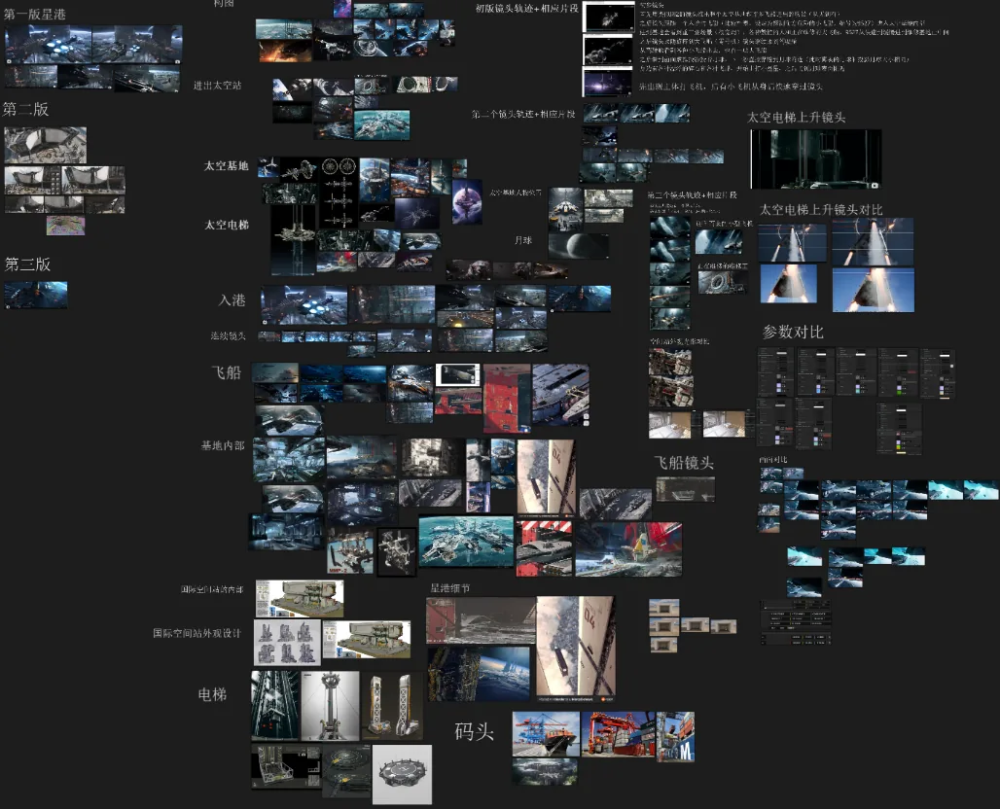
创意先由 AI 铺开成多版可评估的方案，方向当天对齐、当轮落进产品迭代，不必等一版正式制作出来才知道行不行。
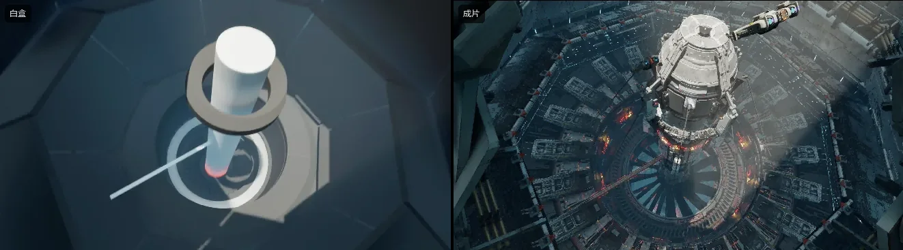
白盒与成片在同一套实时工程里，同一机位下改动当天可见 —— 创意反馈以小时计，而不是等渲染完再说。
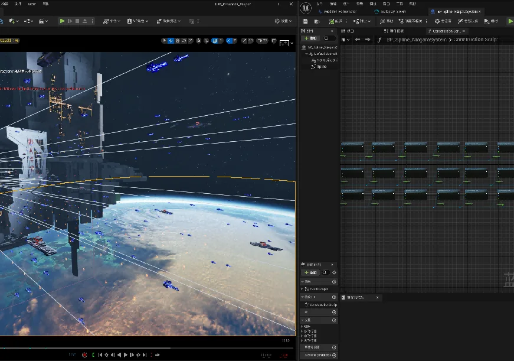
把只有我能做的复杂效果，封装成一线美术点几下就能用的工具。
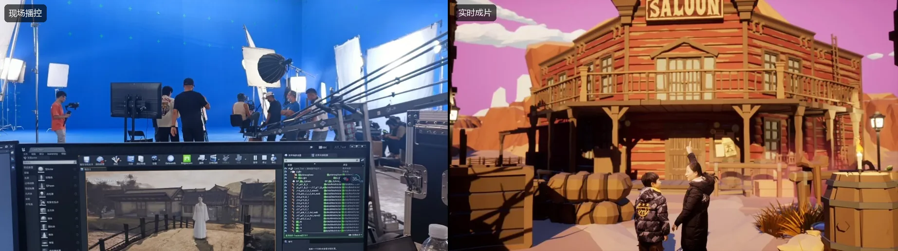
通用的虚幻资产与工程，让产品的过程文件无缝进入拍摄流程 —— 合成从后期挪到拍摄当天。
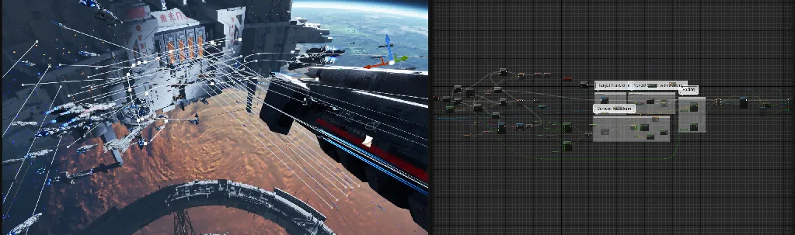
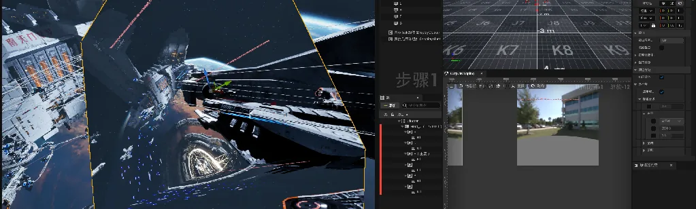
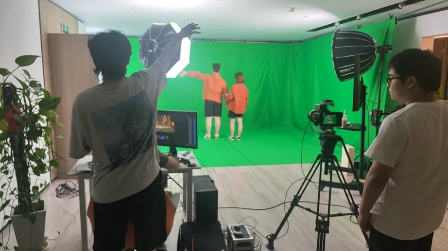
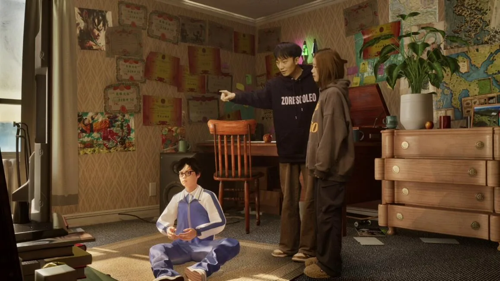
VR 大空间、实时渲染动画、AI 影片与自研 AI 工具，以及政府与行业定制。
 HOVER 播放宣传片
HOVER 播放宣传片
复刻圆明园各类景观，讲清它的起源、发展与毁灭，做成可以走进去的体验。
从关卡设计，到技术验证与动线排布，到商圈上线
我的角色：产品主导 · 技术方向 · 开发流程管理
把圆明园的景观按史料复刻出来，让「起源 — 发展 — 毁灭」变成一条可以走进去的叙事线。这一版最难的地方不在美术量，而在 PC 无线串流的延迟与线下场地动线互相牵制 —— 两者都会拖慢交付。
我用自研的自动化动线排布工具处理物理空间与路径匹配，先把串流方案验证并锁定，再用虚拟拍摄低成本自产宣传片，实时出片、无后期。
三个月从零交付上线，方案可整包复制到不同商圈，最终落地全国 30+ 大型商圈。


 HOVER 播放宣传片
HOVER 播放宣传片
以真实历史为蓝本构建幻想世界，风格诙谐幽默，用户可借助手柄畅快射击。
从关卡设计，到一体机性能验证，到商圈上线
我的角色：产品主导 · 关卡设计 · 外包统筹 · 部署实施
市面上的 VR 大空间产品多是景观漫游，同质化严重。我选择以真实历史为蓝本构建一个幻想世界，用诙谐的风格化美术同时解决「辨识度」和「一体机算力」两个问题。
交互上以手柄射击为核心，跑通安卓一体机的轻量级技术路线；美术风格反过来替性能让路，高密度战斗也能保住帧率。
两个半月上线，与 PC 串流方案同期交付，填补了「风格化互动类」VR 大空间的产品空缺。


 HOVER 播放动画片段
HOVER 播放动画片段
一条基于 UE 的快速动画成片流程，一到两个月就能把新内容投放市场。
从引擎实时管线，到多屏形态映射，到门店上线
我的角色：管线搭建 · 美术标准 · 产品线规划
线下剧场最大的问题是内容更新慢、单套制作成本高，观众的新鲜感衰减很快。我搭了一条基于 UE 的实时渲染动画成片流程，让《逃离恐龙岛》《神秘海洋》这类新内容一到两个月就能投产。
同一套内容适配环幕、碗幕、CAVE 多折幕、半球幕与五折幕，多屏形态之间不再重复制作。
LED 巨幕与动感座椅结合，形成飞越剧场、暴走列车、穿越影院等产品线，落地深圳、上海、杭州、成都等地，单店日客流 2500 以上。


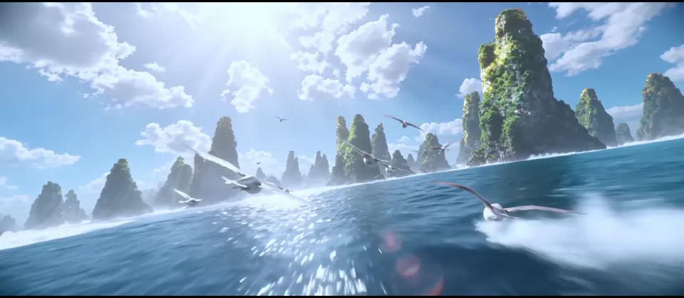
HOVER 播放影片用 AI 生成影像，为 LED 巨幕与穿越影院产出能持续更新的影片内容。
从题材与视觉方向，到 AI 影像生成与剪辑，到影院放映
我的角色：内容主导 · AI 影像生成与剪辑 · 视觉方向
LED 影院的内容过去靠实拍或三维制作，单套成本高、更新慢。AI 影像生成把更新门槛拉低了不少，但它不会自动帮你把镜头接成一部片子 —— 画面一致性、节奏与叙事得自己把控，否则生成出来的只是一堆好看的碎片。
我以《山海经》与《火焰山穿越》两个题材各做一条完整影片，从视觉方向、镜头节奏到生成与剪辑统一把控，让分散生成的画面能拼成有推进感的成片。
两条影片直接适配 LED 巨幕与穿越影院放映，可作为影院内容库的快速更新方案。
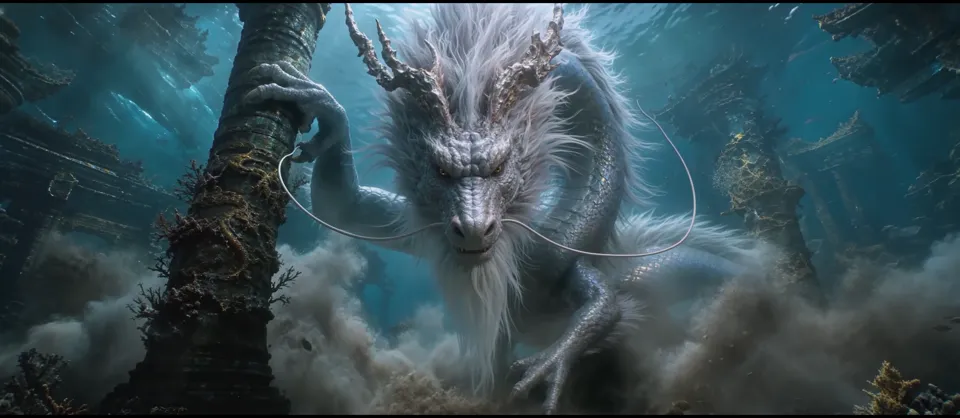
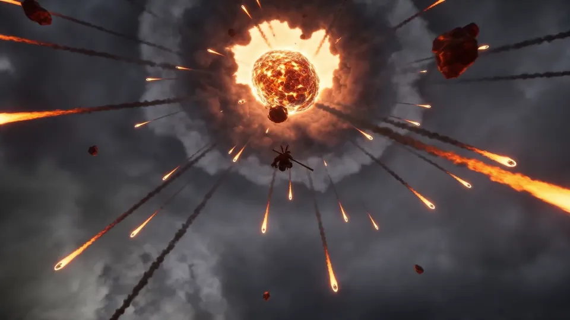
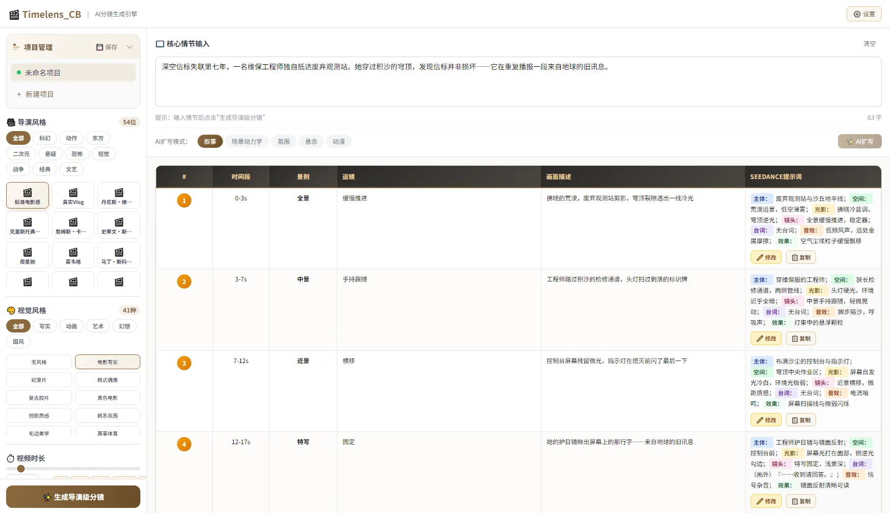
输入一段情节，自动生成导演级分镜表，每一镜直接产出可投喂视频模型的七字段提示词。
从导演风格与视觉风格配置，到分镜表生成，到提示词视图导出
我的角色：产品设计 · 提示词架构 · 前端开发
面向 AI 视频创作的分镜引擎：输入一段情节，选定导演风格与视觉风格，自动生成带时间段、景别、运镜与画面描述的分镜表，每一镜同时产出可直接投喂视频模型的七字段提示词（主体 / 空间 / 光影 / 镜头 / 台词 / 音效 / 效果）。
提示词按 L0–L6 分层注入，把导演风格、景别运镜策略、视觉风格与扩写模式拆成四份独立配置 —— 54 位导演、41 种视觉风格、5 种扩写模式，换风格只改配置，不动核心逻辑；输出侧再配一条 JSON 容错解析链，保证生成结果能稳定落表。
单文件前端应用，原生 HTML / CSS / JS，无框架无构建，配 IndexedDB 项目管理与缓存版本号机制，打开网页就能用，也方便随时拷给同事。
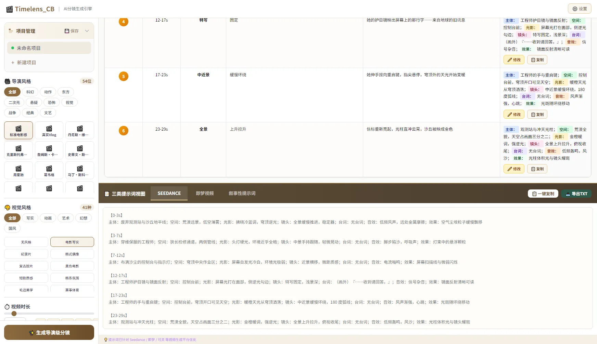
 HOVER 播放片段
HOVER 播放片段
全实时虚拟制片流程，绿幕拍摄，画面里只有演员是真人。
从风格设计与 blockout，到台词与演员指导，到现场实拍
我的角色：导演 · 风格设计 · 分镜 · 演员指导
新怪谈题材偏门，预算与周期都极紧，传统「拍摄 + 后期」的流程不可能在两三天内出片。
我走全实时虚拟制片：风格设计、blockout、台词、分镜、演员指导多数由本人完成；绿幕拍摄，画面里只有演员是真人，其余全部实时生成。
拍摄出片本身只花两三天，实时出片、无后期。


把山洪地质灾害的成因与应对，做成一套可演练、可评分的国家级仿真平台。
从灾害机理拆解，到演练事件编排，到评分闭环
我的角色：产品与工作流设计 · 技术方向验证 · 开发流程管理
同一套产品要同时承担「科普宣传」与「演练考核」两种目标，纯展示型内容满足不了后者。
我把知识科普与演练脚本解耦：用可编辑的「事件 / 灾害 / 时间 / 任务」编排系统承载演练逻辑，再以评分系统形成闭环，同一个平台既能看也能考。
最终落地为中国气象局气象宣传与科普中心的国家级山洪地质灾害防御仿真演练平台。


把手术规划、XR 导航与术中辅助决策，合成一条医教研闭环。
从手术规划，到 XR 导航引导，到术中实时辅助决策
我的角色：产品与工作流设计 · 技术栈打通 · 开发流程管理
医、教、研三类临床实践需求原本分散在不同工具里，缺少一套能同时覆盖的 XR 方案。
我把智能手术规划、XR 手术导航、智能手术工具、术中实时辅助决策四项能力组合成一条链路，让同一个病例在术前规划、教学与术中复用同一份数据。
为多家医疗机构提供骨穿刺引导 MR 实训。


 HOVER 播放演示
HOVER 播放演示
让气象数据自己长成 3D 画面，主播在虚拟演播厅里实时播控。
从数据接入，到 3D 可视化生成，到实时播控出镜
我的角色：播控系统自研 · 技术方向 · 开发流程管理
气象数据本身抽象，直播内容制作门槛高，临时更新内容往往需要技术人员介入。
我把三件事并到一起：按本地气象数据或上传内容自动生成 3D 可视化的组件、多套完整的虚拟演播场景与交互特效、以及一套操作无门槛的实时播控终端。
主播可以自己换数据、换场景、实时更新内容，用于中国气象局虚拟直播。


片场内完成在线虚拟包装与实时播控，画面内容可通过系统编程暴露在监控面板中。
从脚本规划与场景设计，到全 VP 实时 3D 预演，到现场配合与成片输出
我的角色：全栈主导 · 脚本与场景设计 · 现场配合 · 成片输出
MV 需要在有限场地内呈现美术馆级画面，传统后期流程满足不了现场实时调整与实时成片的要求。
我搭了完整的虚拟制片流程：场地架设、相机追踪环境、智能灯光、3D 预演；在片场内完成在线虚拟包装与实时播控，画面内容通过系统编程暴露在监控面板中，现场即可调。
最终完成 CCTV《诗画中国》栏目 × 德基美术馆《金陵图》MV 的虚拟制片全流程技术支持。


 HOVER 播放演示
HOVER 播放演示
用手机陀螺仪扫描定制图形观看，把展项内容变成可以随身带走的互动。
从定制图形设计，到 AR 内容制作，到手机端落地
我的角色：产品设计 · 内容制作 · 技术方向
政府与展陈类的科普多媒体品类很多，但内容相对无趣，观众停留时间短，内容也带不走。
我设计了一组 AR 产品：用手机陀螺仪扫描定制图形即可观看，把展项内容变成可以随身带走的互动。
形成科普类 AR 手机应用系列，可脱离场馆独立使用。


把高风险、高成本的实地培训搬进虚拟环境，并保留真实流程与数据对应。
从培训流程拆解，到虚拟场景与设备还原，到多人实训部署
我的角色：产品与工作流设计 · 技术方向 · 项目管理与验收
警院与工业现场的实地培训成本高、风险大，复杂环境下的标准流程很难反复演练，设备状态也难以在真实场地中逐一核对。
为江苏警官学院做多人 VR 实训，让学员在复杂环境中反复执行证物保护与取证、熟悉勘验流程；为北京 LNG 管道清管维护做实训，支持虚拟环境漫游、工业设备参数状态的可视化呈现与分析，海量数据与实际场地对应同步。
本地 VR 端、管网现场与云端数据实时同步，降低传统实地培训成本，形成可反复演练、可远程查看的实训产品。
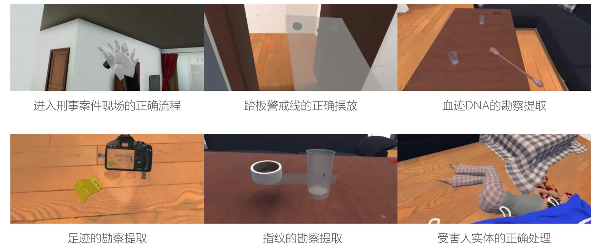
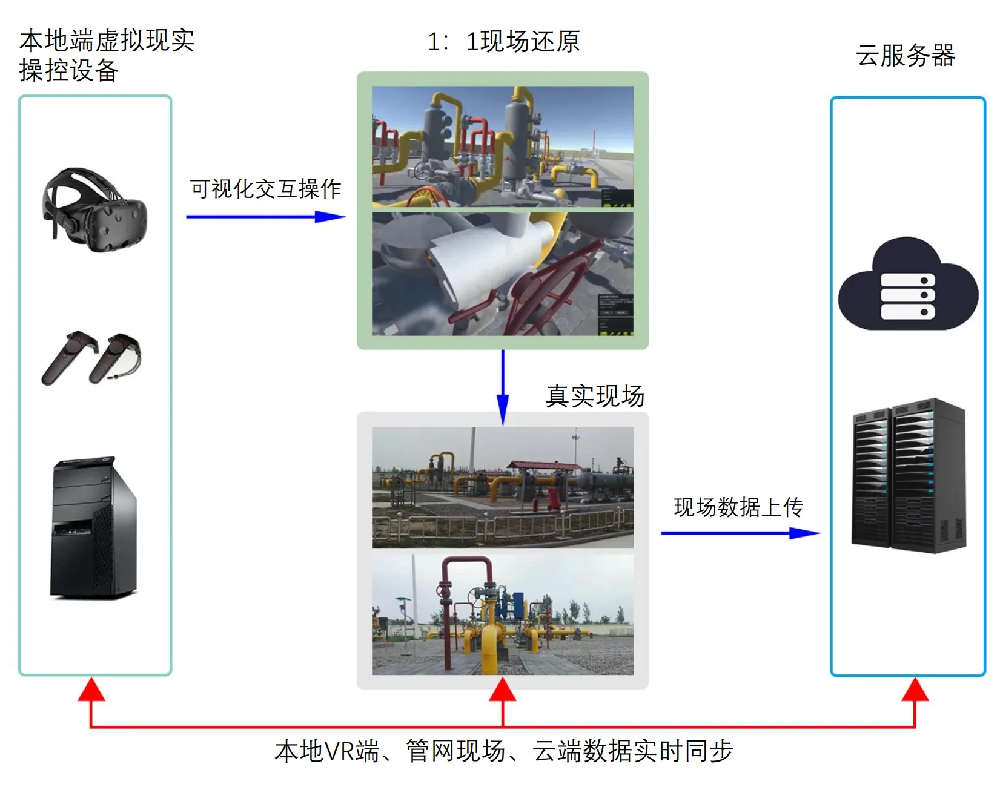
片场、绿幕标定与播控台 —— 这些东西不上台面，但能说明流程是真的跑通了。


项目咨询、技术合作或岗位机会，都欢迎直接聊。
手机号未在本页公开，需要电话沟通请先扫码加微信。
目前状态：开放合作与项目咨询。